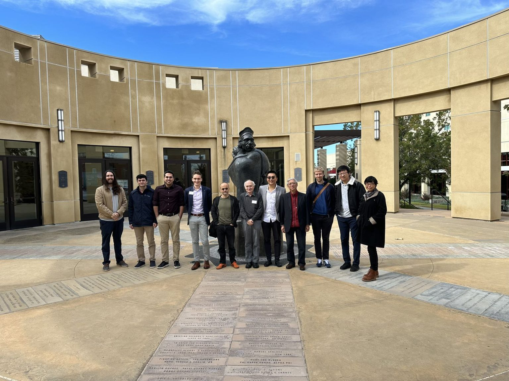
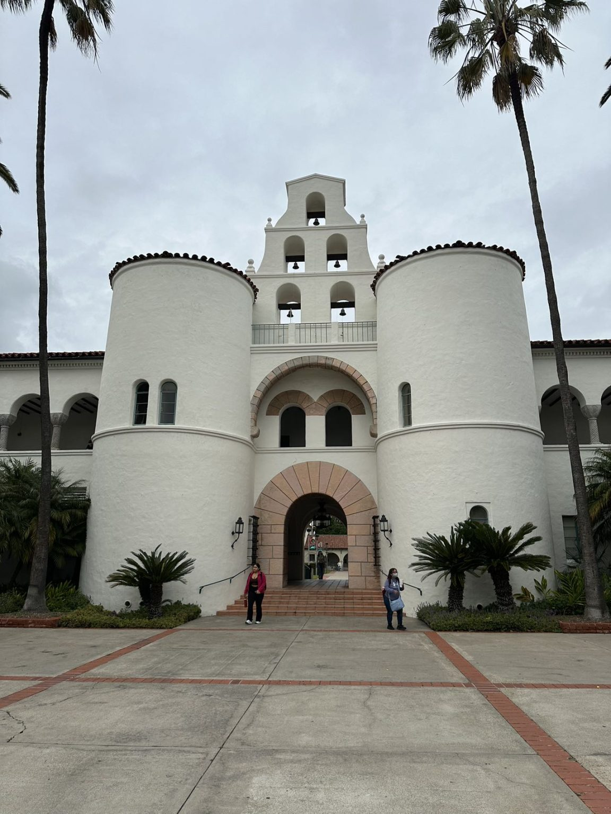
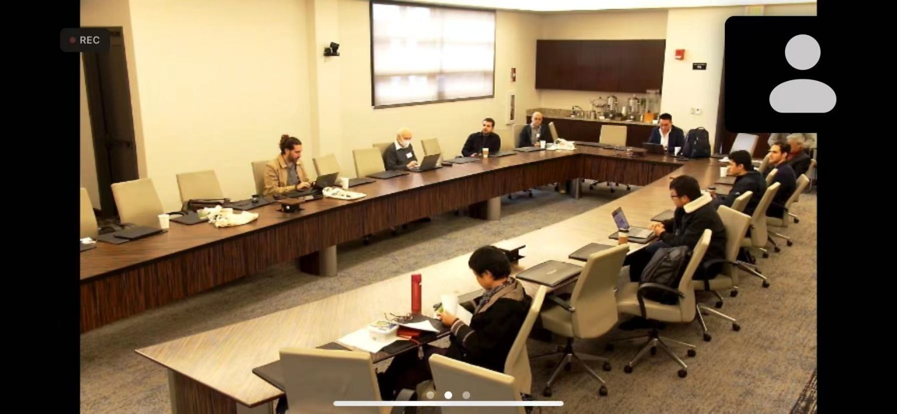
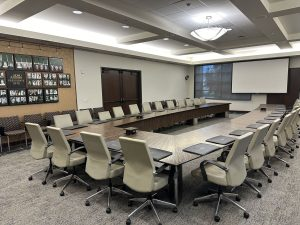

TACPS 2024 (January) was held successfully
🎉🎉🎉 Congratulations! The first TACPS was successfully held at
San Diego State University from January 25–26, 2024!
Results
-
Zheng, X., Mok, A.K., Piskac, R., Lee, Y.J., Krishnamachari, B., Zhu, D.,
Sokolsky, O., and Lee, I. (2024, July).
Testing Learning-Enabled Cyber-Physical Systems with Large-Language Models:
A Formal Approach. In Companion Proceedings of the 32nd ACM International Conference on the Foundations of Software Engineering (pp. 467–471).
-
Building on discussions initiated at this workshop, a corresponding Dagstuhl Seminar proposal was developed and ultimately accepted. The seminar, titled “Advancing Testability and Verifiability of CPS with Neurosymbolic and Large Language Models” (Dagstuhl Seminar 202501048), will be held in October 2026.
Memories




Program
First Day
Second Day
Many Thanks to Local Organizers
- Dr. Bryan Donyanavard, Assistant Professor at the Department of Computer Science, San Diego State University.
- Dr. Shangping Ren, Professor at the Department of Computer Science, San Diego State University
Venue